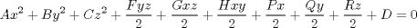

| 3.16. The Quadric (QADRIC) Definitions | ||
|---|---|---|
 | Chapter 3. Geometric Statements in APT |  |
| 3.16. The Quadric (QADRIC) Definitions | ||
|---|---|---|
| | Chapter 3. Geometric Statements in APT | |
The general qadric surface is the locus of points that satisfy the following general equation in the second degree:
SQAD = QADRIC/ a, b, c, d, e, f, g, h, p, q, r, d
Figure 3.59 through Figure 3.62 and Figure 3.63 through Figure 3.67 show all allowable quadric surfaces, together with the normal equation for each surface.
In many instances a quadratic (that is, parabola, ellipse, hyperbola) is defined in equation form. For example, an ellipse my be specified in the following form:
Ax2 + By2 + Cx + Dy + E = 0
ELLP1 = QADRIC/ A, B, 0, 0, 0, 0, C, D, 0, E
As further illustration, the parabola (y - a)2 - p(x - b) = 0 can be expressed
y2 - 2ay + a2 - px + pb = 0
or, collecting terms:
y2 - 2ay - px + (pb + a2 )
The general quadric definition can then be used as follows:
PARB = QADRIC/ 0, 1, 0, 0, 0, 0, -p,$$
(-2 * a), 0, (p * b + a**2)This provides the facility for specifying any two-dimensional quadratic curve with the QADRIC surface definition.
| |  | |
| 3.15. The Sphere (SPHERE) Definitions |  | 3.17. The Reference System (REFSYS) Statement |